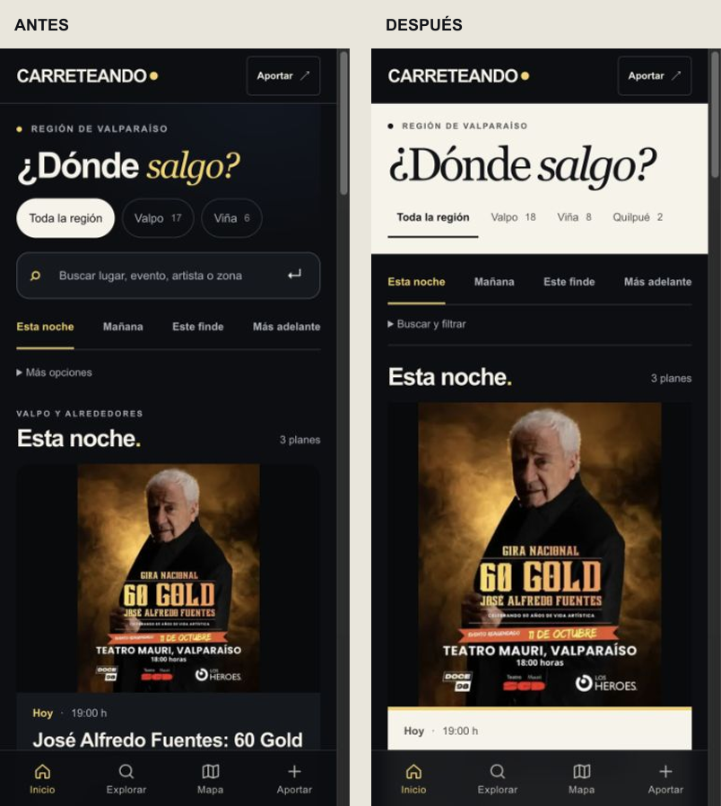
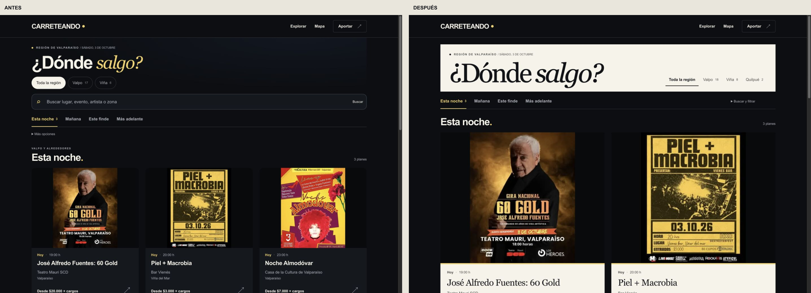
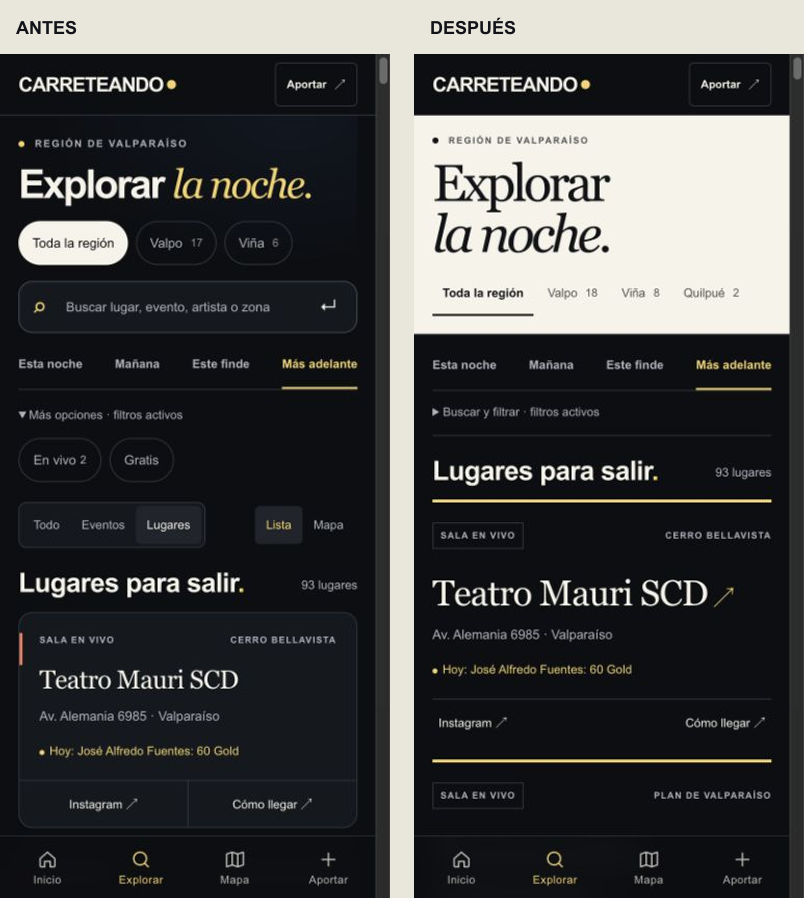
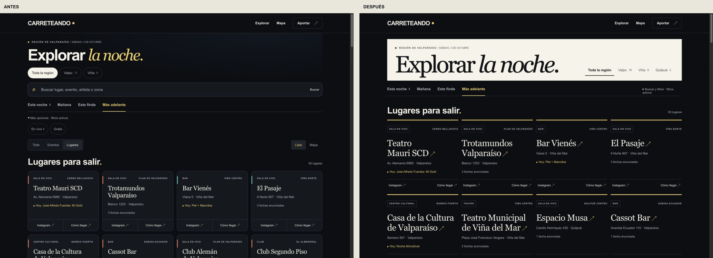

CARRETEANDO / SEGUNDA PASADA VISUAL
Menos controles.
Más noche.
Cuatro cambios: cabecera editorial clara, filtros secundarios agrupados, afiches más grandes y fichas tipográficas de lugares. Sin funciones nuevas. Rama canónica feat/frontend-final-october; código 0da3664.
Primer viewport móvil · 390 × 844

Portada escritorio · 1440 × 1000

Lugares · móvil

Lugares · escritorio

Capturas reales de builds locales. Los datos públicos se actualizaron durante la revisión: cambian algunos contadores y lugares. Las dos imágenes originales de referencia no estaban disponibles; se utilizó su descripción en el brief. El handoff identifica las inconsistencias de datos observadas y las limitaciones de las mediciones.
Lighthouse local, portada/explorar/evento: 100 rendimiento, 100 accesibilidad, 96 buenas prácticas, 100 SEO. Preview: 99/100/100/58; SEO limitado por protección y noindex. Cero solicitudes adicionales durante la secuencia de interacción registrada. Sin merge.